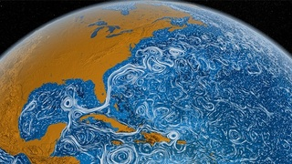
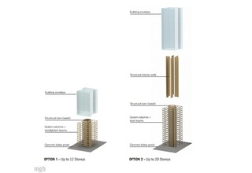
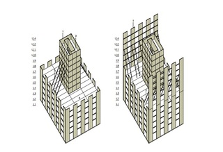
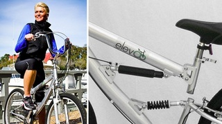
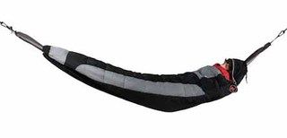
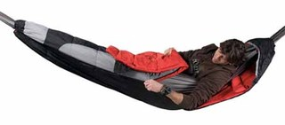
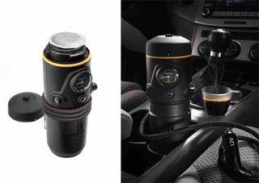
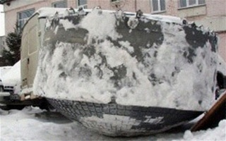
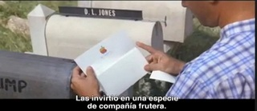
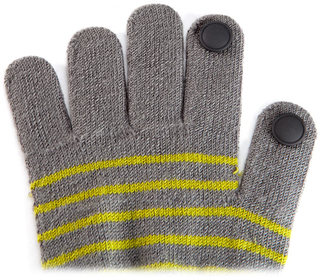

Tue, 27 Mar 2012 10:39:53 GMT
Controla la presión de tus ollas con personicas de colores
Controla la presión de tus ollas con personicas de colores
Normalmente, para que la presión no termine liándotela en lo que cocinas, llega un momento en el que tienes que dejar la tapa abierta de la olla de alguna manera. Vale, puedes dejarla descentrada o incluso poner un cubierto, pero … Sigue leyendo →
historias relacionadas
Sporty Supaheroe, chaqueta de ciclismo con luz para confundirte con platillo volante
El puesto de trabajo portátil [Veredicto: ríete del baúl de la Piquer]
Marshall fabrica la nevera de las estrellas de Rock
Acampando al raso con este híbrido de hamaca y saco [Veredicto: durmiendo en un capullo]
Proyectan en Vancouver un edificio de 30 pisos realizado íntegramente con madera
Normalmente, para que la presión no termine liándotela en lo que cocinas, llega un momento en el que tienes que dejar la tapa abierta de la olla de alguna manera. Vale, puedes dejarla descentrada o incluso poner un cubierto, pero no me negarás que la idea de poner un muñeco para hacer el mismo trabajo es mucho más curiosa y simpática.
Se trata de Lid Sid, un par de muñecos rojo y blanco, que no sólo podrás colocar como si se estuvieran asomando dentro o fuera de la olla, sino que además, mientras no los necesites y gracias a su forma, los podrás dejar enganchados en un asa o en la mesa, donde se mantendrán “erguidos”.
Miden 4,8 x 2,2 x 4,5 cm y están diseñados por Luka Or, que no sabemos si es un caníbal en potencia o con un sentido del humor entre lo macabro y lo simpático.
Controlar la presión de tus ollas con estilo te costará 12 € por el pack de 2. Carillo la verdad, aunque si hubiera puesto un sistema para controlar el tiempo, como que se le fuera hinchando la cabeza o una alarma que soltará un grito, la verdad es que entonces sería mucho más útil. [OhGizmo]

Mon, 26 Mar 2012 22:20:47 GMT
Scalextric Digital consigue que en la misma pista compitan 6 vehículos
Scalextric Digital consigue que en la misma pista compitan 6 vehículos
Se acabó lo de “dos corren, el resto mira”. Las partidas de slot cobran una nueva dimensión gracias a la última evolución de Scalextric Digital que permite que hasta 6 automóviles corran compitiendo entre sí en los dos tradicionales carriles … Sigue leyendo →
Se acabó lo de “dos corren, el resto mira”. Las partidas de slot cobran una nueva dimensión gracias a la última evolución de Scalextric Digital que permite que hasta 6 automóviles corran compitiendo entre sí en los dos tradicionales carriles de la pista que desde niños nos ha hecho vivir los sueños de velocidad con automóviles vinculados a leyendas como Fangio, Lauda, Prost, Schumacher, Alonso… o el propio Carlos Sainz, que no sólo de F1 vive el aficionado a este juego.
Hasta ahora si te juntabas con 6 amigos en casa para llevar a cabo una vibrante competición de Scalextric la cosa tenía dos variantes:
Carreras por parejas en modo eliminatorio o clasificatorio o el que pierde sale de la pista… o bien te veías obligado a montar una auténtica obra de ingenieria civil con un circuito de tres pistas (¡con las curvas compensadas!) a fin de que los seis coches pudieran correr a la vez.
Eso ya forma parte de la historia gracias a la unidad de control de Scalextric Digital que asigna a cada vehículo un código de identificación individual de manera incluso si comparten carril cada uno puede ser controlado por su propio piloto.
De esta manera incluso se puede configurar coches y mandos de manera adecuada para cada competidor si es que hay novatos y veteranos que, evidentemente, no se encontrarían cómodos compartiendo velocidad, sensibilidad del mando, etc.
Existe un pack denominado Scalextric Digital Platinum que incluye un completo surtido de vehiculos de alta gama (Porsche 997s, Lamborghini Gallardo GTs, Audi R8s…) y por si te lo estabas preguntando hay segmentos de pista especiales para que los vehículos que circulan por el mismo carril puedan efectuar el adelantemiento a los “doblados“
Ahora ya queda a vuestro libre albedrio si se observan las habituales normas de cortesía de F1 con los doblados o aquí no hay amigos. ─[Scalextric / Pocket-lint]
Mon, 26 Mar 2012 18:31:44 GMT
El vídeo time-lapse de las corrientes marinas que encantará a los amantes de la pintura de Van Gogh
El vídeo time-lapse de las corrientes marinas que encantará a los amantes de la pintura de Van Gogh
No estaba muerto, que estaba de parranda dibujando mapas de mareas para la NASA. Después de ver el vídeo que os mostramos a continuación es difícil no sustraerse a recordar las singulares pinceladas del genial Vincent Van Gogh. Y todo … Sigue leyendo →
historias relacionadas
A grabar Terabits como churros
Un experimento impresionante: El cañón de vórtices
Guantes conductivos. No son ninguna tontería
Pair, la aplicación “colaborativa” para parejas
Harrods te quiere vender una tele de plasma de 1 millón de dólares

No estaba muerto, que estaba de parranda dibujando mapas de mareas para la NASA. Después de ver el vídeo que os mostramos a continuación es difícil no sustraerse a recordar las singulares pinceladas del genial Vincent Van Gogh. Y todo a cuenta de un vídeo time-lapse que te enseñamos a continuación y que muestra los ciclos de movimientos de las corrientes marítimas creado por el Centro Goddard de Vuelo Espacial de la NASA examinando los movimientos de las masas acuáticas entre junio de 2005 y diciembre de 2007.
En pocas ocasiones, como en esta, se puede hablar de que la Ciencia se convierte en Arte.
Si hace unas semanas te hablábamos aquí en Gizmodo de una curiosa aplicación para iPad que nos permitía interactuar con un cuadro de Van Gogh, ahora es e l propio océano el que se convierte en un lienzo vivo del artista holandés.
Este vídeo, que se titula “Océano perpetuo” y que te recomendamos disfrutar seleccionando la resolución 1080p, visualiza un período de 30 meses de movimientos de las aguas marinas de nuestro planeta. El vídeo, además de hipnótico, resulta altamente instructivo al permitir un detallado estudio del comportamiento de mares y océanos por todo el planeta.
La animación ha sido creada por la NASA empleando los modelos cartográficos oceánicos de alta resolución del JPL, el Laboratorio de Propulsión a Chorro, que habitualmente se emplean para desarrollar simulaciones y predecir cambios en las corrientes marinas.
En esta ocasión los resultados se han exagerado un poco recurriendo a la representación gráfica de los mismos con cierto toque artístico innegablemente vangoghiano, demostrando una vez más que la Madre Naturaleza sigue siendo el más inspirado de los artistas. ─[NASA]
Mon, 26 Mar 2012 16:24:18 GMT
Proyectan en Vancouver un edificio de 30 pisos realizado íntegramente con madera
Proyectan en Vancouver un edificio de 30 pisos realizado íntegramente con madera
Se acabó la crisis del ladrillo, demos paso a la era del tablón. Al menos en Vancouver hay alguien que apuesta decididamente por la arquitectura sostenible (la que no se sostiene suele acabar malamente) empleando exclusivamente madera para la construcción … Sigue leyendo →
historias relacionadas
Sporty Supaheroe, chaqueta de ciclismo con luz para confundirte con platillo volante
El puesto de trabajo portátil [Veredicto: ríete del baúl de la Piquer]
Marshall fabrica la nevera de las estrellas de Rock
Acampando al raso con este híbrido de hamaca y saco [Veredicto: durmiendo en un capullo]
Controla la presión de tus ollas con personicas de colores
Se acabó la crisis del ladrillo, demos paso a la era del tablón. Al menos en Vancouver hay alguien que apuesta decididamente por la arquitectura sostenible (la que no se sostiene suele acabar malamente) empleando exclusivamente madera para la construcción de un edificio con 30 plantas que llegaría a los 120 metros de altura. Ni acero ni hormigón ni ladrillos. Madera y punto. Volvemos a la construcción natural y para evitar que arda se recubrirá con carbón, que además actúa como aislante.
El diseño es obra del canadiense Michael Green, que ya parecía destinado por su apellido (significa verde en español) a acometer un proyecto tan ecológico como el de levantar un rascacielos hecho de madera.

Si llegara a construirse sería el edificio más alto del mundo con “forjado” de madera. El estudio, que ya cuenta en su haber con aeropuertos en la propia Vancouver y en Ottawa además de otras edificaciones en Tayikistán, Taiwán o la ciudad de Nueva York, pretende con este proyecto un tipo de construcción más respetuosa con el medio ambiente, habida cuenta de que los edificios construidos con acero y hormigón son responsables de la producción de grandes cantidades de CO2.
El edificio tendría una estructura interior de vigas de madera laminada y una estructura de tiras de madera en varias capas que soportaría la carga de los pisos. En cuanto a la obtención de la madera necesaria no hay que recordar la gran cantidad de masa forestal de que dispone Canadá, un recurso sostenible puesto que además una vez convertidos los árboles en tablones esa zona puede ver crecer más árboles con el paso de los años.

También pretenden con este proyecto llamar la atención sobre la edificación de esta naturaleza, estando convencidos de que en el futuro podría evolucionar la técnica y dar lugar a construcciones de mayor altura. ─[MG Architecture]
Mon, 26 Mar 2012 11:59:56 GMT
Apple ofrecerá licencias gratuitas de su diseño nano SIM
Apple ofrecerá licencias gratuitas de su diseño nano SIM
En un giro de acontecimientos y con la decisión de la ETSI sobre el nuevo estándar nano SIM a la vuelta de la esquina, Apple decide sorprender a todos anunciando que, de manera radicalmente opuesta a su campaña de demandas … Sigue leyendo →
historias relacionadas
James Cameron sobrevive a su experiencia Abyss y llega a los 11km de bajo el mar
El mercado de películas por streaming legal ya es más grande que el de DVDs y Blu-rays en EEUU
El precio de las acciones de Apple superará en 3 años el PIB de España
La prueba científica de que las palomitas de maíz son más sanas que la fruta y las verduras
Nokia venderá el Lumia 900 por $99 (sí, noventa y nueve)

En un giro de acontecimientos y con la decisión de la ETSI sobre el nuevo estándar nano SIM a la vuelta de la esquina, Apple decide sorprender a todos anunciando que, de manera radicalmente opuesta a su campaña de demandas legales por patentes, su diseño de nano SIM podrá usarse gratuitamente por todas las compañías. Bien por Apple que parece empezar a recuperar la cordura.
La propuesta de Apple además, pide que las otras propuestas de las demás empresas también lo hagan en estos términos, cosa con la que no podría estar más de acuerdo y que, a pesar del pasado de Apple, podría indicar que las cosas van a cambiar.
Recordemos que una de la grandes razones de la guerra de patentes fue la decisión y cabezonería del propio Steve Jobs. Con su muerte mucha gente ha pensado que Apple caería en picado, pero puede que sea al revés, que suponga un cambio de rumbo y un lavado de imagen.
Pero, sin dejarme llevar más por la esperanza de que vuelva el buen rollo entre fabricantes de móviles, la propuesta de Apple cambia las cosas y haría que lo realmente importante, las características técnicas y de diseño del estándar, sea lo que decida.
La votación será a finales de esta semana, aunque queda por ver lo “real” que será, ya que Nokia, que tiene otro diseño, es la empresa con más potencia de voto, mientras que Apple, si decide registrar 5 de sus empresas europeas, obtendría sin problemas la mayoría. Que gane el mejor, si las normas lo permiten claro. [Techweek]
Mon, 26 Mar 2012 09:29:58 GMT
James Cameron sobrevive a su experiencia Abyss y llega a los 11km de bajo el mar
James Cameron sobrevive a su experiencia Abyss y llega a los 11km de bajo el mar
Tras pasar varias horas “enlatado” dentro de su submarino Deepsea Challenger, por fin James Cameron ha cumplido su objetivo de ser el primer ser humano en solitario en alcanzar el punto más profundo del océano, el Abismo Challenger en la … Sigue leyendo →
historias relacionadas
El mercado de películas por streaming legal ya es más grande que el de DVDs y Blu-rays en EEUU
Apple ofrecerá licencias gratuitas de su diseño nano SIM
El precio de las acciones de Apple superará en 3 años el PIB de España
La prueba científica de que las palomitas de maíz son más sanas que la fruta y las verduras
Nokia venderá el Lumia 900 por $99 (sí, noventa y nueve)

Tras pasar varias horas “enlatado” dentro de su submarino Deepsea Challenger, por fin James Cameron ha cumplido su objetivo de ser el primer ser humano en solitario en alcanzar el punto más profundo del océano, el Abismo Challenger en la Fosa de las Marianas. Tras 11 km de profundidad, multitud de grabaciones en 2D y 3D, muestras y hasta recogida de bichicos de la zona hadal, ahora sólo nos queda ver el documental del National Geographic.
Sí, porque James Cameron, conocido amante de las profundidades marinas, no sólo ha conseguido hacer todo esto gracias a que está forradísimo, sino también a su colaboración con la NASA y el Nation Geographic.
Para que os hagáis una idea de lo tan rematadamente profundo que ha llegado, ha tardado 2 horas y 36 minutos en llegar hasta allí, y en regresar otros 70 minutos. Todo eso teniendo que soportar en el punto más bajo, más de 1.000 atmósferas de presión.
Afortunadamente para el resto de nosotros, para disfrutarlo no tendremos que soltar un pastizal ni sufrir horas en una experiencia similar a irse a la playa en pleno agosto por una autopista con atasco dentro de un Sinca Mil sin aire acondicionado. Gracias a la ingente cantidad de vídeos, fotos y muestras que ha tomado, podremos verlo todo.
Ahora que ya ha cumplido uno de sus sueños, sólo le queda empezar a mutar jugadores de la NBA con genes de pitufo para seguir adelante con sus fílmicos e inquietantes planes. [NationalGeographic]
Mon, 26 Mar 2012 07:37:22 GMT
Regula el asiento de tu bici en movimiento con Elev8
Regula el asiento de tu bici en movimiento con Elev8
En las bicis (como en los monociclos) existe la posibilidad de regular la altura del asiento y ajustarlo para que ni tengamos que pedalear como Gollum ni que necesitemos usar zancos. Pero claro, el problema es que está pensado para … Sigue leyendo →
historias relacionadas
ET3, ¿Serán los tubos de vacío con levitación magnética el transporte del futuro?
Handpresso Auto, para el coche de los muy cafeteros

En las bicis (como en los monociclos) existe la posibilidad de regular la altura del asiento y ajustarlo para que ni tengamos que pedalear como Gollum ni que necesitemos usar zancos. Pero claro, el problema es que está pensado para hacerlo cuando no vamos montados, y mientras estamos subidos no podemos cambiar fácilmente la altura a no ser que seamos unos equilibristas. Las bicicletas Elev8 quieren darte la posibilidad de regular el sillín mientras pedaleas.
Y es que no es lo mismo montarte, donde no viene mal poder tocar con los pies el suelo, que estar subido y en movimiento. Es más, dependiendo del terreno, lo cansado que estés o el tipo de músculos que quieras usar, el hecho de poder cambiar la altura del sillín es una gran ventaja.
Utiliza un sistema neumático, que permite no sólo cambiar la altura entre sus dos extremos, sino hacerlo también en puntos intermedios con total precisión, de manera que regulas mientras estás montado sabiendo perfectamente lo que quieres, y no a lo “acierto-error”.
Es obra de Bill Becker, un jubilado estadounidense que trabajaba en una línea de montaje para coches, y aunque el sistema beneficia a todo el mundo, su principal clientela es la gente mayor y con algún tipo de problema que les dificulte subirse con normalidad.
Estará disponible a partir del 10 de abril en EEUU. No se sabe si llegará al resto del mundo ni a que precio, pero con la crisis y bajada de ventas de coches, lo mismo lo consiguen importar los canis y lo usan para tunear bicis, junto con luces de torre de ordenador y estampitas de Camarón y una virgen. [Core77]
Sun, 25 Mar 2012 17:04:53 GMT
Un experimento impresionante: El cañón de vórtices
Un experimento impresionante: El cañón de vórtices
Clásico es, ya entre los antiguos alumnos más que entre los actuales, el volcán que hacía tu padre para presentarlo en tu clase de ciencias con gelatina y papel mojado. Evidentemente el Estados Unidos van más allá y el invento … Sigue leyendo →
historias relacionadas
A grabar Terabits como churros
Guantes conductivos. No son ninguna tontería
Pair, la aplicación “colaborativa” para parejas
El vídeo time-lapse de las corrientes marinas que encantará a los amantes de la pintura de Van Gogh
Harrods te quiere vender una tele de plasma de 1 millón de dólares

Clásico es, ya entre los antiguos alumnos más que entre los actuales, el volcán que hacía tu padre para presentarlo en tu clase de ciencias con gelatina y papel mojado. Evidentemente el Estados Unidos van más allá y el invento es el Cañón de Vórtices. Os lo explicamos.
Un vórtice no es más que una perturbación del aire que se repliega sobre si misma según avanza permitiéndole avanzar sin dispersarse. Si este concepto lo unimos con el clásico cañón, por todos conocido, tenemos un arma, que no mortífera pero sí impresionante.
Se trata de crear dichas perturbaciones para hacerlas avanzar hasta 10 metros de distancia con la energía suficiente para destruir torres de vasos de plástico e incluso generarlos con humo para que sean visibles en el aire.
Aquí os dejamos un vídeo mucho más gráfico y explicativo de lo que se trata.
Pinche aquí para ver el vídeo
¿A que ahora ya sabes como se las ingenian los del cine para hacer fantasmas? [Francis emule news]
Sun, 25 Mar 2012 10:25:09 GMT
A grabar Terabits como churros
A grabar Terabits como churros
Al principio eran los disquetes de 1,44 Mb donde nos cabía toda la información necesaria para nuestra vida. Más adelante pasamos a los CD’s con su ingente capacidad de 650 Mb y los pen-drive, ya pasados unos años, los que … Sigue leyendo →
historias relacionadas
Un experimento impresionante: El cañón de vórtices
Guantes conductivos. No son ninguna tontería
Pair, la aplicación “colaborativa” para parejas
El vídeo time-lapse de las corrientes marinas que encantará a los amantes de la pintura de Van Gogh
Harrods te quiere vender una tele de plasma de 1 millón de dólares
Al principio eran los disquetes de 1,44 Mb donde nos cabía toda la información necesaria para nuestra vida. Más adelante pasamos a los CD’s con su ingente capacidad de 650 Mb y los pen-drive, ya pasados unos años, los que establecieron el estándar en 1 Gb. Hoy día esa barrera se ha sobrepasado pero con este descubrimiento vamos más allá.
Un grupo científico internacional participado por investigadores del CSIC, que no todos los inventos españoles tienen que ser con palo, chupa-chups y fregona, han descubierto una nueva técnica con la que almacenar un Terabit de información en apenas unos segundos.
Este grupo científico, liderado por investigadores de la Universidad de York, proponen modificar la escritura magnética actual de los discos duros tradicionales por una especie de golpe de calor con el que almacenar más de un dato al mismo tiempo.
Este proceso es 100 veces más rápido que el tradicional. Según Atxitia, “este proceso es 100 veces más rápido que la tecnología que actualmente utilizan los discos duros, y puede almacenar terabytes de información por segundo”. Además, el investigador del CSIC opina “el uso de calor consume mucha menos energía que el de un campo magnético”.
Este proyecto está liderado por investigadores de la Universidad de York y ha contado con la colaboración del Instituto de Ciencia de Materiales de Madrid del CSIC, el Instituto Paul Scherrer (Suiza), la Universidad de Nihon (Japón), el Instituto de Magnetismo de Kiev (Ucrania), la Academia Rusa de Ciencias y la Universidad de Nimega (Holanda). [Nature Comunications]
Sat, 24 Mar 2012 16:06:34 GMT
Acampando al raso con este híbrido de hamaca y saco [Veredicto: durmiendo en un capullo]
Acampando al raso con este híbrido de hamaca y saco [Veredicto: durmiendo en un capullo]
Si os gustan las excursiones e ir de acampada os habréis encontrado más de una vez en la situación de dudar si vale o no la pena montar la tienda para pasar la noche. Quizá el cielo está muy sereno … Sigue leyendo →
historias relacionadas
Sporty Supaheroe, chaqueta de ciclismo con luz para confundirte con platillo volante
El puesto de trabajo portátil [Veredicto: ríete del baúl de la Piquer]
Marshall fabrica la nevera de las estrellas de Rock
Proyectan en Vancouver un edificio de 30 pisos realizado íntegramente con madera
Controla la presión de tus ollas con personicas de colores

Si os gustan las excursiones e ir de acampada os habréis encontrado más de una vez en la situación de dudar si vale o no la pena montar la tienda para pasar la noche. Quizá el cielo está muy sereno y la temperatura es agradable, o la parada para dormir va a ser muy corta, etc. Sea cual sea el motivo igual un saco de dormir como este, que recuerda en su concepto a la típica hamaca que se ata entre dos árboles, nos puede venir bien para pasar la noche.
A pesar del acondicionamiento que hagas del lugar y de la mini-colchoneta que puedas utilizar, dormir en el suelo con un saco de dormir puede dejarte la espalada molida. Solo con que haya un par de piedrecillas sueltas lo vamos a recordar durante todo el día siguiente, y más sin en esa jornada tenemos planificado caminar montaña arriba durante más de seis horas. ¡Descansar lo mejor posible es básico para el excursionista!

Alguien decidió aunar conceptos, y acordándose seguramente de las grandes siestas babeantes que hacía en su hamaca de redecilla, pensó que sería buena idea fabricar un saco de dormir que se pudiera suspender en el aire. Así igual el balanceo nos ayuda a dormir, y también estamos a salvo de cualquier insecto o animal que repte por los suelos, además de alejarnos de la humedad del mismo si es que ha llovido previamente.
Colgados entre dos árboles dentro de ese “churro” estaremos bien abrigados (como una crisálida en un capullo), y aunque no nos levantemos mariposeando felices (no nos engañemos, como en la cama de casa no se descansa en ningún sitio), al menos será muy rápido y fácil desmontar “la tienda” y el campamento. ─ [Likecool]
Sat, 24 Mar 2012 12:31:06 GMT
Handpresso Auto, para el coche de los muy cafeteros
Handpresso Auto, para el coche de los muy cafeteros
He descubierto que los coches más famosos del cine y la TV tenían una importante carencia. Cierto es que KITT hacía cosas inverosímiles y tenía multitud de prestaciones (los saltos y la súper persecución, o como pasar la imagen a … Sigue leyendo →
historias relacionadas
ET3, ¿Serán los tubos de vacío con levitación magnética el transporte del futuro?
Regula el asiento de tu bici en movimiento con Elev8
He descubierto que los coches más famosos del cine y la TV tenían una importante carencia. Cierto es que KITT hacía cosas inverosímiles y tenía multitud de prestaciones (los saltos y la súper persecución, o como pasar la imagen a cámara rápida, eran espectaculares), el Aston Martin de Bond tenía múltiples gadgets (igual o más que el Batmóvil), en el Ecto-1 se trasportaban cañones láser y trampas para cazar fantasmas, y en la furgoneta del Equipo A un arsenal de metralletas y el añadido de un chofer cuadrado como un armario ropero y con muy malas pulgas, etc… pero ninguno de ellos tenía una cafetera incorporada para hacer fantásticos espressos. Ahora tú podrás convertir tu automóvil en una cafetería ambulante con el Handpresso Auto.

La moda de las cafeteras de cápsulas desechables ha llegado ya al sector de la automoción, y no tendremos ya que esperar a encontrar una área de servicio en nuestra ruta para tomarnos un cafetito, con parar un momento y sacar este cachivache de la guantera tendremos suficiente. Deberemos conectarlo a la toma del encendedor del coche, añadir un poco de agua y… ¡Listos! Eso previo pago de los 150€ que nos pide el fabricante. ¿Eres un fanático del café y necesitas una dosis a todas horas? ¡Ya estás encargando una unidad!
No sé yo cual será el siguiente paso. ¿Se podría acoplar ahí una buena resistencia y una olla express para hacer el potaje de garbanzos mientras conduces de vuelta a casa? La optimización del tiempo sería tremenda y muchas familias podrían volver a las dietas y platos de antaño. Aunque seguro que George Clooney no quedaría tan glamuroso anunciando fabada como con los cafés…
Miedo me da en que el conector del coche viva la locura de los USB de los ordenadores, a los que se ha creado infinidad de auténticas aberraciones al buen gusto. De momento, y si os apetece, “E cuando arrivo voy a casa, un café…” ─ [Handpresso]
Sat, 24 Mar 2012 08:10:49 GMT
Marshall fabrica la nevera de las estrellas de Rock
Marshall fabrica la nevera de las estrellas de Rock
En muchos casos asociamos un tipo de producto a una marca concreta que, ya sea por ser pionera en su fabricación, por la calidad de sus acabados o por su simple dominio del mercado, hace de “estándar” de ese objeto. … Sigue leyendo →
historias relacionadas
Sporty Supaheroe, chaqueta de ciclismo con luz para confundirte con platillo volante
El puesto de trabajo portátil [Veredicto: ríete del baúl de la Piquer]
Acampando al raso con este híbrido de hamaca y saco [Veredicto: durmiendo en un capullo]
Proyectan en Vancouver un edificio de 30 pisos realizado íntegramente con madera
Controla la presión de tus ollas con personicas de colores
En muchos casos asociamos un tipo de producto a una marca concreta que, ya sea por ser pionera en su fabricación, por la calidad de sus acabados o por su simple dominio del mercado, hace de “estándar” de ese objeto. Así cuando imaginamos a una estrella del rock desgañitándose en el escenario y rascando la guitarra seguramente la visualizareis con unos grandes altavoces y amplificadores Marshall a sus espaldas. ¿Quizá es que en el cine y la TV siempre aparecen los mismos? Pero ahora cuando veáis el próximo concierto una duda os asaltará, pues camuflado entre tanta potencia musical igual habrá una de estas particulares neveras que aquí os presentamos
Y es que seguro que los Rolling Stones tienen una de estas repleta de zumos de frutas hipervitamínicos en sus cocinas (o quizá guarden ahí algo de alcohol o las bolsas de sangre para sus transfusiones diarias), y así mientras Mick Jagger se prepara un sándwich saca el embutido del refrigerador cantando el “Satisfaction” por encontrarse casi como en el escenario… o quizá será por que está contento al ver que todavía le queda chorizo ibérico para el bocata.
A esta neverita Marshall no le falta detalle, como los botones y comandos de la parte superior, y en tus fiestas con los amigotes podrás cantar los gratest hits borrachines (ya sabéis, cada uno tiene los suyos) mientras te encaramas a este pseudo-amplificador cual estrella del Rock dirigiéndose a las masas de fans. Si al tirarte sobre la multitud esta se aparta y te lastimas un poco, siempre podrás abrir la nevera y aplicarte algo frío sobre el golpe para reducir la inflamación.
Marshall espera comenzar a servir los pedidos a partir del mes de Octubre (cuando el calorcito ya habrá pasado, todo hay que decirlo) y aunque todavía faltan más de 6 meses ya podéis apuntaros a la lista de pre-reservas si os interesa… Por $299 este genuino frigo de Marshall podrá ser tuyo (las botellas y latas de cerveza Bud no vienen incluidas). ─ [Technabob]
Fri, 23 Mar 2012 21:53:02 GMT
Avistamiento OVNI en Chile y caida de un misterioso (y enorme) fragmento de titanio en Siberia: ¿comienza la invasión?
Avistamiento OVNI en Chile y caida de un misterioso (y enorme) fragmento de titanio en Siberia: ¿comienza la invasión?
Ojo, que también puede ser todo un montaje de Nacho Vigalondo con motivo del estreno de su película “Extraterrestre” que llega a las pantallas españolas este viernes. En Chile las evoluciones de una patrulla acrobática aérea se ha visto acompañada … Sigue leyendo →
historias relacionadas
El mercado de películas por streaming legal ya es más grande que el de DVDs y Blu-rays en EEUU
Apple ofrecerá licencias gratuitas de su diseño nano SIM
El precio de las acciones de Apple superará en 3 años el PIB de España
La prueba científica de que las palomitas de maíz son más sanas que la fruta y las verduras
Nokia venderá el Lumia 900 por $99 (sí, noventa y nueve)

Ojo, que también puede ser todo un montaje de Nacho Vigalondo con motivo del estreno de su película “Extraterrestre” que llega a las pantallas españolas este viernes. En Chile las evoluciones de una patrulla acrobática aérea se ha visto acompañada por un invitado imprevisto. En la otra punta del planeta, un gran fragmento metálico de titanio ha caido del cielo mientras la NASA y la Agencia Espacial Rusa niegan que forme parte de ninguno de sus artefactos. A continuación te mostramos un par de vídeos ilustrativos.
El compañero volador de los aviones chilenos parece quedar descartado como emisario de las estrellas.
Al parecer el vídeo que ha aparecido en Internet se correspondería con una demostración acaecida en 2010 en la base aérea de chilena de El Bosque. Aunque Leslie Kean, autor especializado en estos temas llama la atención sobre el hecho de que al ver el vídeo a cámara lenta resulta que antes de cruzar el cielo el OVNI parece despegar del propio suelo… se trataría simplemente de un insecto, como muestra el análisis que se realiza en este vídeo.
Pero lo que ya es algo más complicado es lo del gran fragmento de titanio de vaya usted a saber qué origen y que las agencias espaciales rusa y norteamericana niegan que pertenezca a ninguno de sus satélites u otros ingenios en órbita.
La localidad siberiana de Otradnesnky es la que recibió la visita de este visitante de unos 200 kilos de peso el pasado 18 de marzo. Alrededor del mismo no se detectó radiación. Desde la NASA manifiestan que por su aspecto no parece pertenecer a ninguna nave espacial terrestre conocida ni parece formar parte de los sistemas auxiliares de lanzamiento.
Curiosamente los habitantes de la remota zona donde ha caido recuerdan que hace un par de años por allí ya recibieron otro objeto similar en el que les aguardaba una curiosa sopresa: en su interior había un oso. Descartado que viniera desde la constelación de la Osa Mayor, supusieron que se trataba de un plantígrado oriundo de la región que decidió acomodarse en ese refugio venido de las alturas. Aquí tienes más información en un vídeo que te dejará helado. Por la nieve que hay en Siberia, especialmente. ─[Live Science / RT]
Tue, 27 Mar 2012 10:18:36 GMT
Harrods te quiere vender una tele de plasma de 1 millón de dólares
Harrods te quiere vender una tele de plasma de 1 millón de dólares
No, ni es Photoshop, ni un efecto de la cámara, esta monstruosa televisión de Panasonic mucho más grande que la gente es real, se trata de una tele de plasma de 152 pulgadas que comenzará a vender un nuevo departamento … Sigue leyendo →
historias relacionadas
A grabar Terabits como churros
Un experimento impresionante: El cañón de vórtices
Guantes conductivos. No son ninguna tontería
Pair, la aplicación “colaborativa” para parejas
El vídeo time-lapse de las corrientes marinas que encantará a los amantes de la pintura de Van Gogh
No, ni es Photoshop, ni un efecto de la cámara, esta monstruosa televisión de Panasonic mucho más grande que la gente es real, se trata de una tele de plasma de 152 pulgadas que comenzará a vender un nuevo departamento tecnológico de los grandes almacenes Harrods. El precio es de 1 millón de dólares por lo que
Dándole cifras concretas, la tele pesa 600 kg y tiene una resolución de 4096 x 2160 píxeles, aunque con un tamaño de 152″ cada uno debe ser como una pieza de LEGO duplo.
Para daros una idea de lo grande que es, imaginada una matriz de 3×3 de teles de 50″. Ahora además dadle al conjunto una relación de aspecto cinematográfica 17:9 y la capacidad de ofrecer 3D Full HD.
Pues esto es lo que ofrece la TH-152UX1W de Panasonic para los clientes más acaudalados de Harrods. Claro está que con un millón de dólares se pueden hacer muchas cosas, pero al menos esta tele no está manchada de sangre ni se aprovecha de la explotación de otros de manera exagerada como otros muchos artículos de lujo. [The Telegraph]
Mon, 26 Mar 2012 18:55:38 GMT
Nokia venderá el Lumia 900 por $99 (sí, noventa y nueve)
Nokia venderá el Lumia 900 por $99 (sí, noventa y nueve)
No, no se ha caído ningún cero del final de la cifra. Nokia confía plenamente en el Lumia 900 tiene pensado inundar el mercado (en fin, inundar… dejémoslo en salpicar un poco) con su nuevo y flamante Windows Phone y … Sigue leyendo →
historias relacionadas
James Cameron sobrevive a su experiencia Abyss y llega a los 11km de bajo el mar
El mercado de películas por streaming legal ya es más grande que el de DVDs y Blu-rays en EEUU
Apple ofrecerá licencias gratuitas de su diseño nano SIM
El precio de las acciones de Apple superará en 3 años el PIB de España
La prueba científica de que las palomitas de maíz son más sanas que la fruta y las verduras
No, no se ha caído ningún cero del final de la cifra. Nokia confía plenamente en el Lumia 900 tiene pensado inundar el mercado (en fin, inundar… dejémoslo en salpicar un poco) con su nuevo y flamante Windows Phone y para ello nada que un precio atractivo. En Estados Unidos de América este terminal podrá conseguirse desde el 8 de abril por $99 (+/- 70€).
La compañía telefónica USA AT&T ha confirmado la disponibilidad de este terminal a ese interesante precio para sus clientes con un contrato de permanencia de dos años.
El Lumia, entre otras características, es uno de los primeros terminales en utilizar la tecnología LTE y quizá esta sea una de las razones que ha llevado a este acuerdo de Nokia y AT&T a fin de popularizar el acceso a las conexiones de datos por este sistema que promete velocidades de vértigo.
Por comparar, Nokia vendía su terminal Lumia 800 (muy parecido al 900, pero sin uso de LTE) por un precio de $800, lo que supone una sutil diferencia. Mientras en España los operadores van anunciando el fin de las subvenciones a los terminales y sólo queda esperar alguna promoción interesante que ponga a nuestro alcance terminales tan interesantes a precios tan atractivos. ─[CNET]
Mon, 26 Mar 2012 17:55:23 GMT
La prueba científica de que las palomitas de maíz son más sanas que la fruta y las verduras
La prueba científica de que las palomitas de maíz son más sanas que la fruta y las verduras
La próxima vez que vayas al cine y te pidas un cubo de palomitas de maíz capaz de sepultar a un niño tienes permiso de los científicos para no sentirte tan culpable con el atracón. Según recientes estudios las palomitas … Sigue leyendo →
historias relacionadas
James Cameron sobrevive a su experiencia Abyss y llega a los 11km de bajo el mar
El mercado de películas por streaming legal ya es más grande que el de DVDs y Blu-rays en EEUU
Apple ofrecerá licencias gratuitas de su diseño nano SIM
El precio de las acciones de Apple superará en 3 años el PIB de España
Nokia venderá el Lumia 900 por $99 (sí, noventa y nueve)
La próxima vez que vayas al cine y te pidas un cubo de palomitas de maíz capaz de sepultar a un niño tienes permiso de los científicos para no sentirte tan culpable con el atracón. Según recientes estudios las palomitas podrían contener unos nutrientes superiores a los que incorporan frutas y verduras. ¿Contará como parte de las “5 al día” que los nutricionistas recomiendan para una vida sana? ¿Dependerá de la película?
La Universidad de Scranton (Pennsylvania, USA) ha confirmado que las palomitas de maíz contienen más antioxidantes que las frutas y/o las verduras.
Y no acaba ahí la cosa. Vamos a centrarnos en esos trozitos de las palomitas que se te quedan en plan “paluego” entre los dientes, arruinando por completo la prometedora relación que pensabas iniciar con la chica a la que con tanto trabajo habías conseguido convencer de que te acompañara el cine. Esos trozitos resultantes de la ruptura del caparazón del grano de maíz, están cargados de altas concentraciones de fibra y antioxidantes. Son, según el investigador Joe Vinson, “una pepita de oro nutricional“. A ver si todavía va a volver a ponerse de moda lo de los piños de oro.
Una de las conclusiones de este estudio es que las palomitas de maíz podrían convertirse en el perfecto alimento para picotear. Por un lado se trata del único producto de este tipo que consiste en un grano 100% sin procesar. Incluso los cereales denominados “integrales” están procesados y diluidos en otros ingredientes o sólo un 51% del producto es grano integral.
Una dosis de palomitas proporcionaría más del 70% de la cantidad diaria recomendada (CDR) de cereales integrales. La CDR equivalente de frutas y verduras aprotaría unos 200/250 mg de antioxidantes mientras que las palomitas aportarían más de 300 miligramos del mismo en forma de polifenoles.
Ahora viene el truco para no convertir esta sana costumbre en una tumba de arterias atascadas. Las palomitas son sanas, pero puedes arruinarlo todo en función del método empleado para convertir los granos de maíz en palomitas.
Lo más sano sería calentándolas mediante aire. Si te dejas llevar por la comodidad de las bolsitas para preparar en el microondas ya estas subiendo al doble de calorías, por no hablar de la tradicional receta que incluye aceite y sartén.
Y por supuesto, el resto de la alimentación debe ser sana y equilibrada. Si después del atracón de comida basura te enchufas el cubo de palomitas no cuenta como “dieta saludable”. ─[Science Daily / Imagen: Pinkcandy/Shutterstock]
Mon, 26 Mar 2012 15:49:21 GMT
El precio de las acciones de Apple superará en 3 años el PIB de España
El precio de las acciones de Apple superará en 3 años el PIB de España
Por culpa de la crisis o gracias a las ingentes vendas de dispositivos de Apple, lo cierto es que las previsiones de algunos economistas, hechas a la luz de la evolución de la cotización en Bolsa de la compañía de … Sigue leyendo →
historias relacionadas
James Cameron sobrevive a su experiencia Abyss y llega a los 11km de bajo el mar
El mercado de películas por streaming legal ya es más grande que el de DVDs y Blu-rays en EEUU
Apple ofrecerá licencias gratuitas de su diseño nano SIM
La prueba científica de que las palomitas de maíz son más sanas que la fruta y las verduras
Nokia venderá el Lumia 900 por $99 (sí, noventa y nueve)

Por culpa de la crisis o gracias a las ingentes vendas de dispositivos de Apple, lo cierto es que las previsiones de algunos economistas, hechas a la luz de la evolución de la cotización en Bolsa de la compañía de Cupertino y de su imparable ascenso en venta de chismes varios, apuntan a una desmesura económica sin parangón y que tiene una cifra muy rotunda a la vista: en 2015 Apple podría valer 1,16 billones de euros, cuando según el Fondo Monetario Internacional ese año España tendrá un Producto Interior Bruto de 1,07 billones de euros. Todo lo que produzca España ese año valdrá menos que la compañía que fundó Steve Jobs.
La escalada del precio de las acciones de Appla sigue sin freno.
Una acción de la empresa ya vale casi tanto como uno de sus productos estrella, el iPad, después de que la semana pasada se cotizase en el mercado tecnológico por encima de los $600. El verano pasado también se pulverizó una cifra tan redonda como la del medio billón de dólares, cuando con un valor bursátil de 560.000 dólares superó la capitalización del gigante petrolero Exxon, una de las mayores compañías del mundo.
No sigue ahí el mareo de cifras. Apple declara haber vendido 3 millones de iPad en sus primeros 3 días a la venta; en los últimos 3 meses ha vendido 37 millones de iPhones (la mitad de su negocio) y sus ingresos ya suponen el 1,2% del PIB USA.
Literalmente, y como ya te contamos recientemente aquí en Gizmodo, en Apple disponen de más de $100.000.000.000 (cien mil millones de dólares) en “cash“, en dinero contante y sonante procedente de las ventas de sus dispositivos, del que han destinado casi la mitad a recompra de acciones y reparto de dividendos.
En una ronda de consultas realizada por la agencia de noticias Reuters a más de medio centenar de consultores tecnológicos y asesores bursátiles se llegó a la conclusión mayoritaria de que el dividendo bursátil de Apple subirá en torno a un 20% en el primer año con lo que en la mejor tradición del clásico “9 de cada 10 dentistas recomiendan chicle sin azúcar” resultó que sólo dos de los consultados recomendaban vender acciones de Apple.
Como en el caso de Forrest Gump, parece que sigue siendo buen negocio ser accionista de la manzanica mordía. ─[Rankia]
Mon, 26 Mar 2012 10:38:50 GMT
El mercado de películas por streaming legal ya es más grande que el de DVDs y Blu-rays en EEUU
El mercado de películas por streaming legal ya es más grande que el de DVDs y Blu-rays en EEUU
El crecimiento del mercado de streaming online es apabullante, más del doble del año pasado a éste. Las cifras estimadas para este año en EEUU hablan de 3.400 millones de visionados por streaming, mucho más que los 1.400 millones del … Sigue leyendo →
historias relacionadas
James Cameron sobrevive a su experiencia Abyss y llega a los 11km de bajo el mar
Apple ofrecerá licencias gratuitas de su diseño nano SIM
El precio de las acciones de Apple superará en 3 años el PIB de España
La prueba científica de que las palomitas de maíz son más sanas que la fruta y las verduras
Nokia venderá el Lumia 900 por $99 (sí, noventa y nueve)
El crecimiento del mercado de streaming online es apabullante, más del doble del año pasado a éste. Las cifras estimadas para este año en EEUU hablan de 3.400 millones de visionados por streaming, mucho más que los 1.400 millones del año pasado y que incluso la estimación de 2.400 millones que supondrán los soportes físicos como el DVD y el Blu-ray. González Macho, va a ser que nos está contando una milonga.
Estos datos totalmente esperanzadores provenientes de EEUU, indican que no es que la gente consuma menos legalmente, sino mucho más, ya que la cifra total de visionados sumando el streaming y el soporte físico es este año de 5.800 millones frente a los 4.000 millones del pasado.
Por lo tanto choca radicalmente con lo dicho por el actual presidente de la Academia de Cine Española, González Macho, que en su último discurso dijo que “Internet no es una alternativa económica para el cine”.
¿Por qué no está pasando lo mismo en España? Pues simplemente porque no hay suficientes ofertas legales patrías, y las que lo han intentado provenientes de fuera se han ido corriendo al ver los pagos desorbitados de derechos que se les pedía.
No es que en España seamos los peores, casos parecidos y con todo tipo de productos se dan por todo el mundo, por ejemplo Alemania tiene muchísimas limitaciones con respecto a los sistemas de streaming de música.
Total, que al final los que se quejan de lo mal que va su industria, son los que se la están cargando por su propia cabezonería y falta absoluta de adecuación a los nuevos tiempos. Y de paso, se intentan cargan la libertad de internet con leyes absurdas.
Señor Macho, yo no sé si para usted la solución no se llama internet porque su portal filmin no se haya comido un rosco, pero está claro que si la industria cinematográfica sigue por este camino, para los ciudadanos españoles parece que la solución tendrá que llamarse proxy. [Bloomberg]
Mon, 26 Mar 2012 08:26:26 GMT
Pair, la aplicación “colaborativa” para parejas
Pair, la aplicación “colaborativa” para parejas
Es curioso como existen cientos de páginas y aplicaciones destinadas a que la gente se busque pareja, pero muy pocas para facilitar la vida en común. Normalmente nos vemos relegados a usar nuestra cuenta de Facebook, Skype o similares, hasta … Sigue leyendo →
historias relacionadas
A grabar Terabits como churros
Un experimento impresionante: El cañón de vórtices
Guantes conductivos. No son ninguna tontería
El vídeo time-lapse de las corrientes marinas que encantará a los amantes de la pintura de Van Gogh
Harrods te quiere vender una tele de plasma de 1 millón de dólares
Es curioso como existen cientos de páginas y aplicaciones destinadas a que la gente se busque pareja, pero muy pocas para facilitar la vida en común. Normalmente nos vemos relegados a usar nuestra cuenta de Facebook, Skype o similares, hasta que, para evitar mezclar con el resto de amigos o compañeros, crear cuentas separadas sólo para tu pareja. Eso se acabó, y no porque te vaya a dejar, sino porque llega Pair, la aplicación destinada a compartir con tu pareja.
Sí, en Pair no hay muros, ni agregar contactos con grupos, ni complicaciones para configurar la privacidad, ni zarandajas… Sólo te permite un contacto con el cual compartes todo.
De esta forma puedes intercambiar fotos, vídeos, archivos, calendarios, localización, mensajes, notas… vamos, la historia completa de vuestra relación sin que nadie se dedique a husmear.
También permite aplicaciones “colaborativas” como listas de tareas comunes, pizarra y hasta la posibilidad de daros “besos de pulgar”, o lo que viene ser pulsar la pantalla en una posición determinada y que le aparezca una huella al otro para que pueda corresponderla.
Pero entre tanto pasteleo resulta interesante el hecho de que todo la información se mantiene en vuestro teléfono y no en ningún servidor, además de que aunque te cabrees y desvincules, la información se mantiene por si acaso.
Por ahora está disponible gratuitamente para iOS, pero están trabajando también en la versión Android, siendo compatible ambas y permitiendo amores tan imposibles como el de Romeo y Julieta entre un usuario de Android y de iPhone. Que potito… [Pair]
Sun, 25 Mar 2012 18:09:45 GMT
Guantes conductivos. No son ninguna tontería
Guantes conductivos. No son ninguna tontería
A simple vista cuando os decimos que los guantes capaces de conducir la electricidad de tu piel a su superficie no parece gran cosa pero si pensamos que hace -10 grados ahí fuera y alguien te llama a tu Smartphone … Sigue leyendo →
historias relacionadas
Un experimento impresionante: El cañón de vórtices
Pair, la aplicación “colaborativa” para parejas
El precio de las acciones de Apple superará en 3 años el PIB de España
El vídeo time-lapse de las corrientes marinas que encantará a los amantes de la pintura de Van Gogh
Harrods te quiere vender una tele de plasma de 1 millón de dólares

A simple vista cuando os decimos que los guantes capaces de conducir la electricidad de tu piel a su superficie no parece gran cosa pero si pensamos que hace -10 grados ahí fuera y alguien te llama a tu Smartphone la cosa cambia. Échale un vistazo con otros ojos a este gadget.
Si vives en Sevilla seguro que esto no te parecerá tan gandisoso pero si vives de Burgos para arriba como un servidor el sacar el teléfono del bolsillo tienes que sufrir una congelación parcial en los dedos para podes escribir un SMS pedirás dos o tres pares de estos guantes conductivos por si se te pierden.
Nos lo traen nuestros ya conocidos amigos de ThinkGeek y aunque su diseño no es nada espectacular su aplicación sin duda lo es. Estos guantes disponen de dos marcas de silicona en los dedos índice y pulgar en ambas manos con las que poder controlar o escribir en nuestro Smartphone si pasar frío.
Sin duda ideales [ThinkGeek]
Sun, 25 Mar 2012 12:40:37 GMT
Un sistema científico para los subtítulos
Un sistema científico para los subtítulos
Para los que nos dedicamos al mundo del vídeo los subtítulos, y sobre todo cómo sincronizarlos con la imagen, es un verdadero quebradero de cabeza. Además el sistema de escribir el texto en la parte inferior de la pantalla hace … Sigue leyendo →
historias relacionadas
Desarrollan un análisis para descubrir si vas a tener un ataque al corazón
Movie2Comics, el programa que transforma automáticamente una peli en un tebeo
Tu propio ratón en el que probar los tratamientos médicos antes de que te los apliquen

Para los que nos dedicamos al mundo del vídeo los subtítulos, y sobre todo cómo sincronizarlos con la imagen, es un verdadero quebradero de cabeza. Además el sistema de escribir el texto en la parte inferior de la pantalla hace difícil disfrutar de la película en versión original. Esto va a cambiar.
Los chinos, como no, han desarrollado el sistema de Dynamic Captioning que convierte las películas en una especie de cómic en movimiento en el que bocadillos a lado de los protagonistas.
Esto más que una revolución científica puede resultar todo una avance para los que nos gusta disfrutar de las películas en versión original. Aunque en nuestro país absolutamente todo el cine se dobla al castellano esto no es así en todos los países.Esta técnica que ha sido desarrollada por la Universidad de Tecnología de Hefei y que ha tenido al científico Wang Meng como principal investigador del proyecto. El propio Meng explicaba el mismo:
La técnica fue motivada para la solución de las dificultades de los espectadores con discapacidad auditiva al ver vídeos. Estos espectadores tienen dificultad en reconocer que o quién está hablando, así que pusimos las secuencias de comandos alrededor de la cara del que habla; ellos tenían dificultades en el seguimiento de las secuencias de subtítulos, por lo que sincronizamos de manera destacada las secuencias de subtítulos.
Todo una avnace, mucho mejor que el 3D. [Physorg.com]
Sun, 25 Mar 2012 08:24:35 GMT
El Gran Hermano a 36 millones de imágenes por segundo
El Gran Hermano a 36 millones de imágenes por segundo
Evidentemente no nos referimos al exitoso “experimento social” emitido en televisión, aunque sin duda es un gran predecesor, si no a un Gran Hermano de verdad. Un ente que nos vigile, y lo más preocupante, y controle a todos ”por … Sigue leyendo →
historias relacionadas
Un experimento impresionante: El cañón de vórtices
Guantes conductivos. No son ninguna tontería
Pair, la aplicación “colaborativa” para parejas
El vídeo time-lapse de las corrientes marinas que encantará a los amantes de la pintura de Van Gogh
Harrods te quiere vender una tele de plasma de 1 millón de dólares
Evidentemente no nos referimos al exitoso “experimento social” emitido en televisión, aunque sin duda es un gran predecesor, si no a un Gran Hermano de verdad. Un ente que nos vigile, y lo más preocupante, y controle a todos ”por nuestra seguridad”. Así nos venderán aplicaciones tecnológicas como la que os presentamos a continuación.
Los sistemas de vigilancia de seguridad por medio de la grabación de imágenes en vídeo no es ningún descubrimiento pero lo que Hitachi ha inventado sí lo es. Aunque no parezca más que uno de estos sistemas de cámaras de seguridad la cosa cambia cuando descubrimos que dicho sistema es capaz de procesar hasta 36.000.000 de imágenes por segundo.
A lo que se dedica este Super-Ultra-Mega-Gran Hermano es ha extraer las caras de estos vídeos y cotejarlas con su base de datos repleta por supuesto de delincuentes, violadores, asesinos o los más buscados por la Interpol.
Y la cosa no acaba ahí ya que si te pareces a algún sanguinario asesino puedes tener problemas ya que el sistema agrupa los rostros similares permitiendo establecer grupos raciales o parentescos.
El sistema lo ha inventado Hitachi, que son de esas empresas que lo mismo te hace una prensa hidráulica que un escaner cerebral que una cámara de vídeo de lo más chic. Y por si no os habíamos asustado aquí os dejamos un vídeo para que lo entendáis mejor.
Pinche aquí para ver el vídeo
[Tec.nologia.com]
Sat, 24 Mar 2012 13:41:49 GMT
Uno de los secretos de la Retina Display pueden ser los filtros de color
Uno de los secretos de la Retina Display pueden ser los filtros de color
Que el nuevo iPad se está vendiendo como churros es una evidencia palpable, y sospecho que en Cupertino Apple debe tener una cámara acorazada rellena de billetes como la que usaba el Tío Gilito para dar largas brazadas. El punto … Sigue leyendo →
historias relacionadas
Guantes conductivos. No son ninguna tontería
Pair, la aplicación “colaborativa” para parejas
El precio de las acciones de Apple superará en 3 años el PIB de España
El vídeo time-lapse de las corrientes marinas que encantará a los amantes de la pintura de Van Gogh
Harrods te quiere vender una tele de plasma de 1 millón de dólares
Que el nuevo iPad se está vendiendo como churros es una evidencia palpable, y sospecho que en Cupertino Apple debe tener una cámara acorazada rellena de billetes como la que usaba el Tío Gilito para dar largas brazadas. El punto fuerte del nuevo dispositivo lo sabemos todos, la Retina Display, y los últimos análisis de esa pantalla parecen indicar que uno de los secretos que se esconden tras su magnífica calidad es el uso de los filtros de color.
Jeff Yurek, uno de los responsables de la Web Dot Color, ha invertido unas buenas horas analizando la pantalla del nuevo iPad, buscando los motivos por los que los colores (y dicen es una opinión generalizada), se ven más ricos y vivos que en el iPad2. Su hipótesis apunta directamente al uso que ha hecho Apple de los filtros de color, mejorándolos respecto a los del anterior dispositivo.
Generalizando mucho podríamos decir que para conseguir el mejor color, o el más fidedigno, el objetivo es que la luz roja, verde y azul sea lo más pura posible. Para esto básicamente podemos actuar o bien sobre la luz de fondo o sobre los mencionados filtros.
Parece que Apple consigue limitar mucho mejor la fuga de luz con los nuevos filtros, aunque para esto necesite comprometer de un 20% a un 30% más de energía. Esta sería otra de las varias razones por las que en Cupertino se vio obligados a dotar al nuevo iPad de una batería mucho más grande. ─ [Tuaw]
Sat, 24 Mar 2012 10:11:07 GMT
Disparando al nuevo iPad con munición de gran calibre [Apple fanboys sensibles abstenerse]
Disparando al nuevo iPad con munición de gran calibre [Apple fanboys sensibles abstenerse]
Todo gadget que sale al mercado pasa unos test de resistencia y golpes, pero me parece que nadie había pensado nunca que el nuevo y flamante iPad tendría que afrontar un día un ataque con armas automáticas. El vídeo que … Sigue leyendo →
historias relacionadas
El mercado de películas por streaming legal ya es más grande que el de DVDs y Blu-rays en EEUU
Apple ofrecerá licencias gratuitas de su diseño nano SIM
El precio de las acciones de Apple superará en 3 años el PIB de España
La prueba científica de que las palomitas de maíz son más sanas que la fruta y las verduras
Nokia venderá el Lumia 900 por $99 (sí, noventa y nueve)
Todo gadget que sale al mercado pasa unos test de resistencia y golpes, pero me parece que nadie había pensado nunca que el nuevo y flamante iPad tendría que afrontar un día un ataque con armas automáticas. El vídeo que veréis a continuación puede herir gravemente la sensibilidad de los amantes de Apple (y de la tecnología en general) más sensibles, y aquellos que recientemente hicieron horas de cola ante las puertas de una Apple Store para comprar el nuevo iPad el mismo día de su lanzamiento seguro que se les removerá el estómago. Eso sí, como curiosidad y espectacularidad (por ser un vídeo en Slow-Motion) siempre es curioso de ver. No es la primera vez que alguien se dedica a machacar alguno de los productos de Apple, desde que Guillermo Tell introdujo esto disparar a la manzana ya llevamos más de un vídeo como este.
La verdad no sabría explicar que es lo que mueve esta gente a hacer vídeos de este tipo. Descarto que pertenezcan a una secta u organización contra el avance y desarrollo del mundo, pues gustan de utilizar lo último en armamento, y lo tecnológicamente más sofisticado. ¿Será que de pequeños ansiaron muchísimo una Game Boy y sus padres nunca se la regalaron? Pudiera ser…
Lo que está claro es que no se andan con chiquitas, y el armamento utilizado es de gran calibre y fuerza destructiva. El primer ataque se hace con un rifle de asalto HK53, y después rematan la faena con una escopeta Benello M4 Super 90 con cartuchos especiales modificados (con pequeñas flechas de acero y también con dos bolas de metal unidas por un alambre). El protagonista del vídeo habla con tanto entusiasmo de su arsenal como lo haría el Geek más aplicado describiendo los componentes que va encontrando al desmontar un iPad. La única diferencia es que este último utilizaría un destornillador para su disección, mientras que el del vídeo hace uso de métodos ultra rápidos para ver las entrañas del nuevo iPad. ─ [OhGizmo!]
Edito: Aunque el vídeo ha sido subido a YouTube de manera muy reciente, me queda la duda de si se trata realmente de una unidad del nuevo iPad ¿La Retina Display ya no luce tan bonita, verdad? Sea como sea, y aun tratándose de un iPad “viejo”, a muchos les resultará un atentado igual de horripilante.
Fri, 23 Mar 2012 22:23:48 GMT
JVC GY-HMQ10, la cámara de vídeo a resolución 4K que podrías permitirte
JVC GY-HMQ10, la cámara de vídeo a resolución 4K que podrías permitirte
Algo menos de 7.000€ es la cantidad que te separa de poder obtener unas grabaciones de vídeo digital con una resolución 4K, imágenes en movimiento a las que ni el nuevo iPad y su flamante pantalla podrían hacerles justicia. Se … Sigue leyendo →
historias relacionadas
Un experimento impresionante: El cañón de vórtices
Guantes conductivos. No son ninguna tontería
Pair, la aplicación “colaborativa” para parejas
El vídeo time-lapse de las corrientes marinas que encantará a los amantes de la pintura de Van Gogh
Harrods te quiere vender una tele de plasma de 1 millón de dólares
Algo menos de 7.000€ es la cantidad que te separa de poder obtener unas grabaciones de vídeo digital con una resolución 4K, imágenes en movimiento a las que ni el nuevo iPad y su flamante pantalla podrían hacerles justicia. Se trata de la cámara GY-HMQ10 que la marca JVC acaba de presentar en Japón. La resolución que puede alcanzar es de 3,840×2,160 píxeles.
Se trata de la primera cámara 4K orientada al mundo profesional y que se vende a un precio relativamente asequible (para tratarse del maquinón de que se trata).
También es una cámara de un tamaño contenido con 1,67 kilos de peso. Tu hombro no sufrirá más de la cuenta. En su interior alberga un sistema de procesado de imagen Falconbird que puede registrar vídeo a una velocidad de 144 Mbps y audio en estéreo a 16Bit/48kHz y 38kbps.
La ingente cantidad de datos que se obtiene al capturar vídeo con esa resolución se ha confiado a un almacenamiento de estado sólido SDXC, una ranura en la que introducir una tarjeta que te permita guardar hasta 1 hora de vídeo en resolución 4K en formato ProRes422 de Apple en una tarjeta SDXC de 64Gb, pudiendo combinar 4 de las mismas en RAID.
Además de en 4K los vídeos pueden grabarse en Full HD AVCHD 60p, 60i, 50p or 50i(MTS). Para el caso de vídeos FullHD la velocidad máxima de grabación sería “tn solo” 28Mbps. ─[JVC/Kenwood]